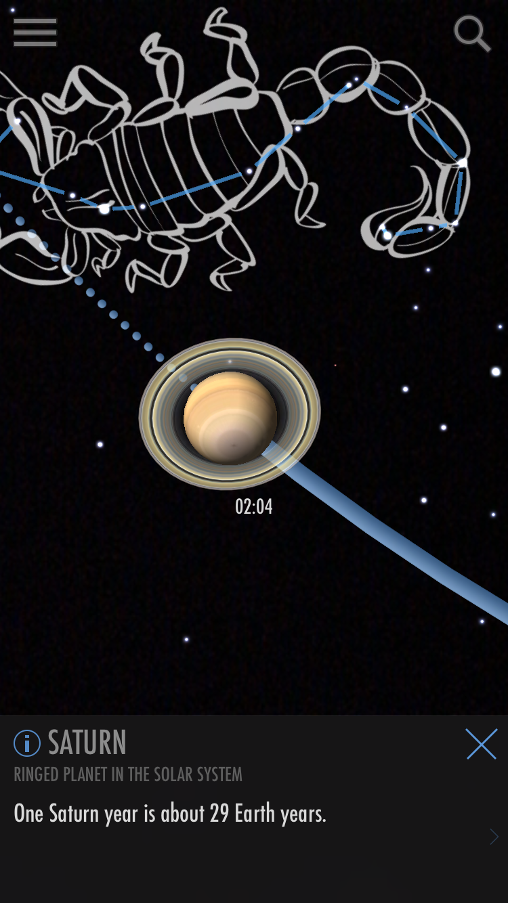
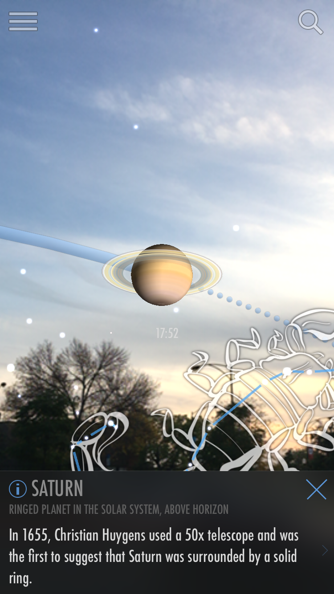
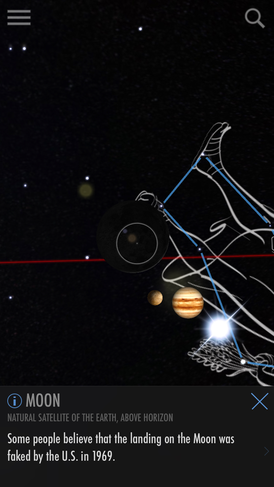
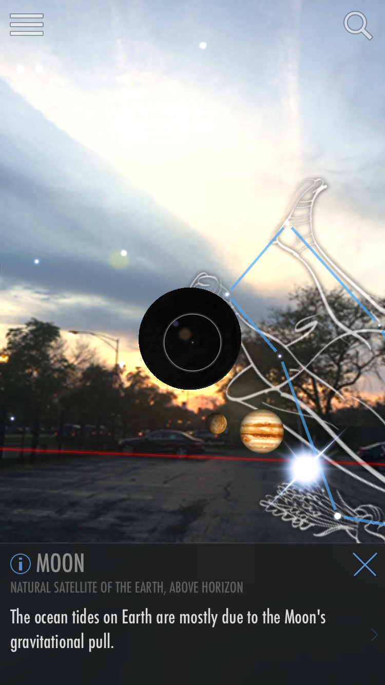

For this homework, I downloaded the iOS AR app ‘SkyView’ and tried it out during both day and night. I searched for Saturn and Moon and took the following pictures after locating them:
 
Picture of Saturn taken when it is dark out (left) and in the evening when there some light (right)
 
Picture of the moon taken with AR disabled (left) and with AR enabled (right)
In the picture, the moon appears as a black circle – this is because it is new moon on the day this picture was taken and therefore, the moon is not visible.
‘SkyView’ augments celestial objects with their names so that the user knows what he/she is looking at and also provides them with some interesting facts about those objects. The user also has the option to see parameters such as mass, radius, orbital period etc., Here are some more data layers that I think could be integrated into the application and make it more useful:
+ Light pollution map: The user might want to find out the general location of a celestial object and then view it with a terrestrial telescope/binoculars/naked eye. The addition of light pollution map of the earth would be useful in this scenario. Since light pollution seriously affects the visibility of space when a user is looking with a telescope/naked eye, the user can use the map to get information about the nearest dark site and get better visibility.
+ Artificial satellite information: Another data source that fits well with this application is artificial satellites. There are thousands of satellites orbiting the earth as well as other celestial objects today – the user would be able to look at the satellites and get information such as the name, launch date, which country the satellite belongs to, it’s purpose etc.,
+ Surface conditions of celestial objects: Addition of information about the composition of the celestial object, surface conditions such as temperature, atmosphere would make the application more effective.
+ Highlighting habitable zones: Information about the habitable zone of stars and the planets lying in those habitable zones would be useful the user.
+ Showing similar/related celestial objects would also make the experience more interesting and exploratory.
© Sai Priya Jyothula. All rights reserved.